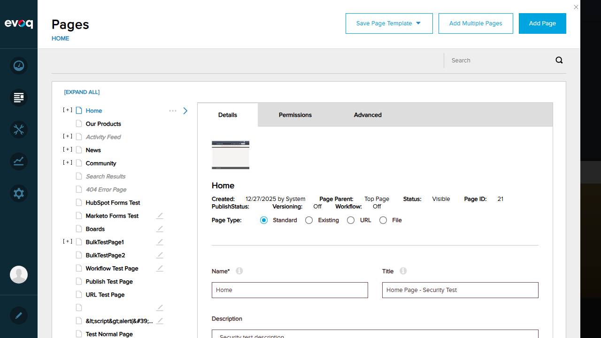
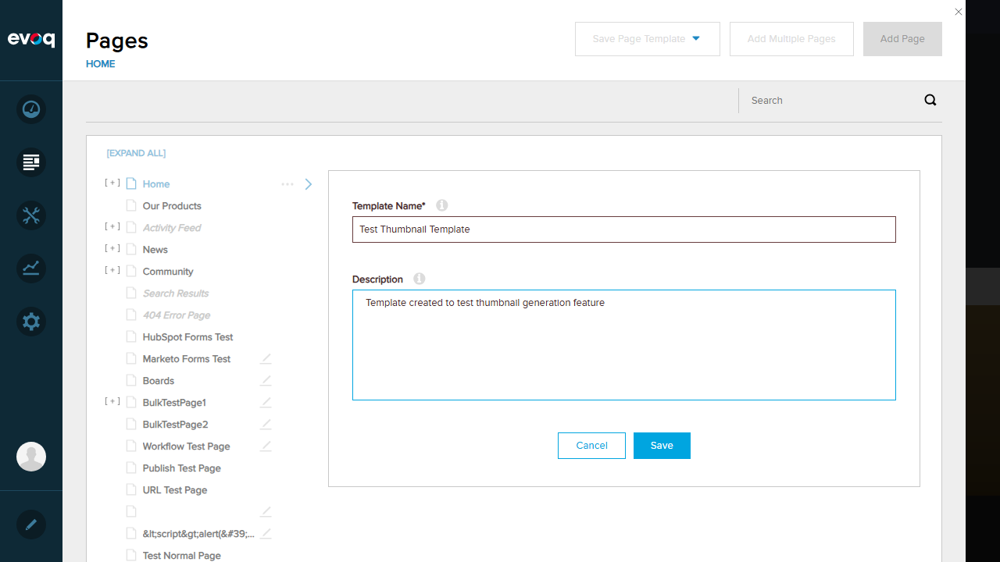
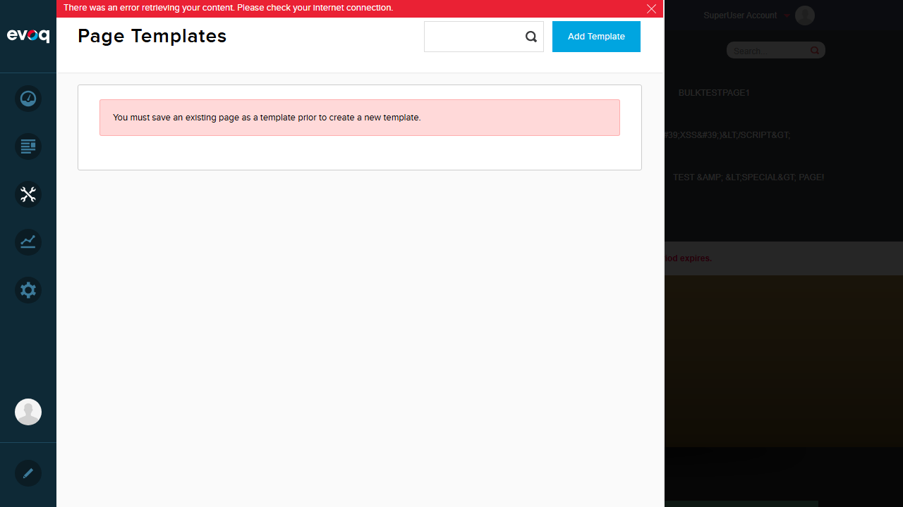
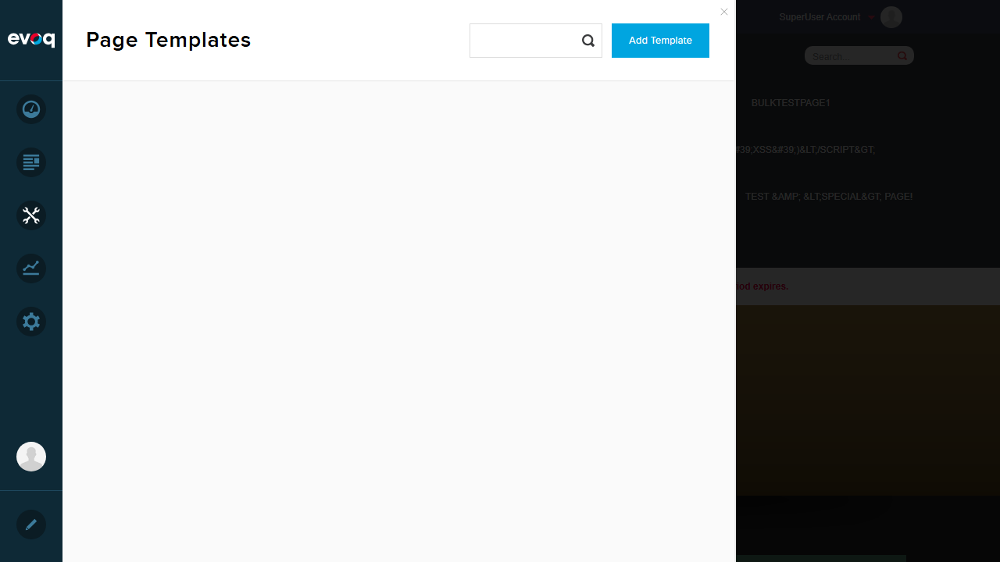

Extension: Evoq.PersonaBar.Templates
Feature: Template Thumbnail Generation
Description: Automatically generates and updates thumbnail previews of template pages using html2canvas
UI Location: Admin > Manage > Templates (thumbnails in list)
Test Date: January 6, 2026
Priority: Medium
Tests Passed
Tests Failed
Verify that a thumbnail is automatically generated when saving a page as a template.
Pages panel with page thumbnail visible:
Template creation form filled:
Error after save attempt:
Verify that thumbnails are updated when the source page of a template is modified.
Templates page with error:
Verify that external URL templates are handled correctly (thumbnails should not be generated for external URLs).
Based on code review of templates.thumbnails.js, lines 62-69:
//if external url then doesn't create thumbnail.
var protocol = checkData.url.indexOf('://');
var checkUrl = checkData.url.substr(protocol > -1 ? protocol + 3 : 0);
if (checkUrl.toLowerCase().indexOf(location.host) != 0) {
$defaultImg.addClass('failed').parent().addClass('failed');
this.updateThumbnails();
return;
}
The code marks external URL templates as "failed" for thumbnail generation, which is the expected behavior.
Verify that failed thumbnail generation is handled gracefully with appropriate error handling.
Based on code review, the system handles failures by:
fallback-thumbnail.pngVerify that thumbnails are generated in both medium and large sizes.
Based on code review of templates.thumbnails.js, lines 162-164:
koData.thumbnail = data.thumbnails[2]; // Medium thumbnail koData.largeThumbnail = data.thumbnails[3]; // Large thumbnail
The system stores both medium (index 2) and large (index 3) thumbnail sizes.
Verify that loading indicators are displayed while thumbnails are being generated.
Based on code review, the system uses CSS classes for loading states:
loading class added to images during thumbnail generationBased on code review of the relevant files:
Page thumbnails ARE visible in the Pages panel (Content > Pages), as shown in step04 screenshot. This suggests the thumbnail generation infrastructure works for page editing, but the Templates module has API issues.
The Templates API (GetTemplates, SaveTemplate endpoints) consistently returns HTTP 500 Internal Server Error.
This prevents:
The backend service needs to be investigated and fixed before thumbnail generation can be properly tested.